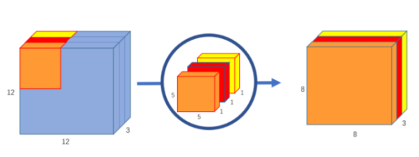
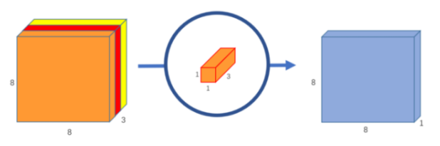
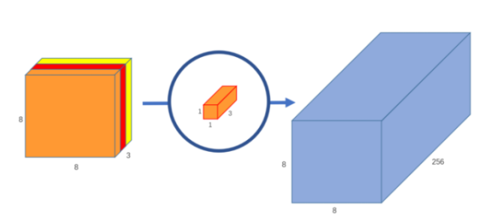
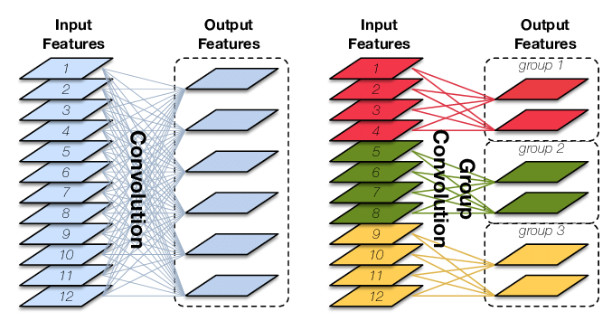

深度可分离卷积#
假设输入是$D_{f^i} * D_{f^i} * M$ ,输出图大小是$D_{f^o}*D_{f^o}N$, 卷积核大小是$D_kD_k$
普通卷积操作#
输入图在经过卷积核（$D_kD_kM$）后输出为目标输出大小，但此时仅为$D_{f^o}*D_{f^o} * 1$ ,需要$N$个这样的操作才能得到目标特征图。
此时所需要的计算量有$D_{f^o}D_{f^o}D_kD_kM*N$。
深度可分离卷积#
输入图首先经过$M$个$D_kD_k1$的卷积核，这样可以得到$D_{f^o}*D_{f^o}*M$的特征图，其中$M$是堆叠出来的，此步骤叫做depthwise convolution 。
再经过$N$个$11M$的卷积核，就可以得到$D_{f^o}*D_{f^o} *N$的特征图。此操作为pointwise convolution。
可以看出，深度可分离卷积可分为逐层卷积和逐点卷积两个步骤，
逐层卷积：

逐点卷积：


计算量分步骤计算分别为$D_kD_kMD_{f^o}D_{f^o}$和$N11MD_{f^o}*D_{f^o}$。
则相比较与常规卷积$\frac {D_kD_kMD_{f^o}D_{f^o}+NMD_{f^o}D_{f^o}}{D_{f^o}D_{f^o}D_kD_kMN} = \frac {1}{N} + \frac {1}{D_k^2}$
针对一般$D_k=3$和$N$远大于9的情况，可知压缩比略小于9。
速度思考#
在速度方面，经过大量实验，我发现在算力足够的GPU平台上，MobileNet不会带来任何速度上的提升（有时甚至是下降的），然而在计算能力有限的平台上，MobileNet能让速度提升三倍以上。
深度可分离卷积将一个标准卷积分割成了两个卷积（逐深度，逐点），因此减小了参数量，对应也减小了总计算量。
好的，在上面的话中，我们可以发现一个有趣的事实：深度可分离卷积的总计算量变小了，但深度可分离卷积的层数变多了。
而结合我们对GPU和CPU的认识：GPU是并行处理大规模数据（矩阵内积）的运算平台，而CPU则倾向于对数据串行计算（一个一个算）。
因此，若GPU的显存足够大（干脆假设无限大好了），因为每层的计算都可以并行一次处理，则此时总运算时间的主导因素是网络的层数。
而对于缺乏并行能力的CPU，总的运算时间的主导因素则是总计算量有关。
pytorch实现#
1 | import torch |
分组卷积#

Group Convolution顾名思义，则是对输入feature map进行分组，然后每组分别卷积。假设输入feature map的尺寸仍为$C∗H∗W$，输出feature map的数量为$N$个，如果设定要分成$G$个groups，则每组的输入feature map数量为$\frac {C}{G}$，每组的输出feature map数量为$\frac {N}{G}$，每个卷积核的尺寸为$\frac CG∗K∗K$，卷积核的总数仍为$N$个，每组的卷积核数量为$\frac NG$，卷积核只与其同组的输入map进行卷积，卷积核的总参数量为$N∗\frac CG∗K∗K$，可见，总参数量减少为原来的 $\frac 1G$，其连接方式如上图右所示，group1输出map数为2，有2个卷积核，每个卷积核的channel数为4，与group1的输入map的channel数相同，卷积核只与同组的输入map卷积，而不与其他组的输入map卷积。
分组卷积的用途#
- 减少参数量， 分成$G$组，则该层的参数量减少为原来的$\frac 1G$
- 可看成structured sparse，每个卷积核的尺寸由$CKK$变为$\frac CGKK$，可以看作将其余$(C-\frac CG)KK$的参数视为0，有时可以取得不错的效果(正则化)。
- 当分组数量等于输入map数量，输出map数量也等于输入map数量，相当于
depthwise convolution - 如果满足3的同时，卷积核大小与输入尺寸相同，则输出$C11$的向量，此时为
global depthwise convolution，可视为全局加权池化，与GAP( global average pooling)的不同之处在于，GDC给每个位置赋予可学习的权重，而GAP是权重相同取个平均。
转置卷积#
空洞卷积#
作用：
- 增大感受野
- 捕获多尺度上下文信息